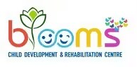

Practical, gentle advice on child development, therapy and everyday parenting for children with special needs.
The developmental milestones to watch — and why acting early makes such a difference.
How OT helps children build everyday skills, confidence and independence.
Typical speech milestones and simple ways to encourage language at home.
What ASD is, common signs, and how the right support helps children thrive.
Understanding sensory needs and how to make daily life calmer.
Practical support for parents on this journey — you matter too.
One full sample article is included. The other topics are ready-to-write ideas — publishing one helpful post a month is one of the strongest ways to rank on Google and be cited by AI assistants. See the README for a content plan.